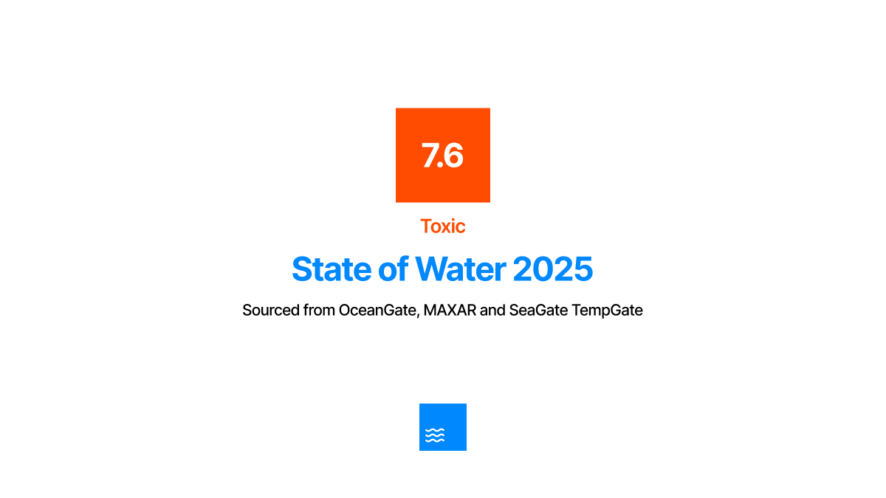

Seagate Announces New Plan to Keep Waters Healthy with New Technologies at SGC 2025
Authored by Ejaz Ali · 3 minute read

© Image copyright: Luis Quintero, from PEXELS
SeaGate Research Lab, University of Westminster ‐ SeaGate hosts an annual conference called SGC, aimed for millions of marine enthusiasts and scientific researchers, to present new research, information and guidance on how the year should be approached as well as what improvements can be made based on data collected from the previous year.
Deployment of TempGate
SeaGate announces creation of a network of 360 new submersibles, called TempGate, manafactured and built by SeaGate.
TempGate is SeaGate's first submersible that was designed, engineered and built by SeaGate in London. It's built to widthstand the harsh conditions of the ocean and to be able to collect data from the ocean floor and the water column.
TempGate is designed to collect data such as temperature, humidity, salinity, pH and seismic activity of the water. The submersible is also equipped with a camera to capture images of the ocean floor and the water column. Data captured from submersible will be used to monitor and research vital and all areas of the ocean as TempGate will patrol the seas aiming to have 45% coverage by 2025.
New SeaGate Submersible Sponsored By Bloom Within
Bloom Within has sponsored the manufacture and production of 1000 TempGate submersibles in a £2.4m deal with SeaGate until 2035.
In response, all Bloom Within sponsored submersible will be painted with Bloom Within and SeaGate branding.
SeaGate Announces State of Water 2025
State of Water is measured on a scale from 1 (low-risk) to 10 (extreme toxicity).
At the conference, SeaGate also released its annual State of Water report, which highlighted the ongoing challenges faced by the world’s oceans. According to the report, the State of Water 2025 is rated at 7.6, categorized as toxic, which reflects a growing global concern over marine pollution, rising temperatures, and declining biodiversity. The report emphasized that the oceans are facing increasing threats from human activities such as industrial waste, overfishing, and plastic pollution, as well as the ongoing impacts of climate change.
The State of Water scale, ranging from 1 (low-risk) to 10 (extreme toxicity), has become a vital indicator of ocean health and serves as a benchmark for policymakers, scientists, and environmental advocates to assess and track the condition of the oceans over time. The alarming toxicity rating underscores the urgent need for global collaboration and innovative solutions to address the growing crises affecting marine environments.